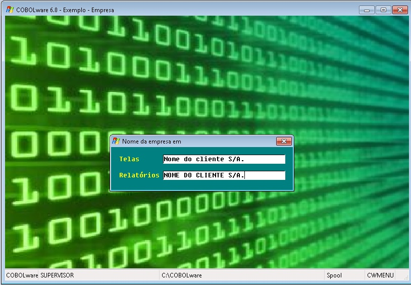
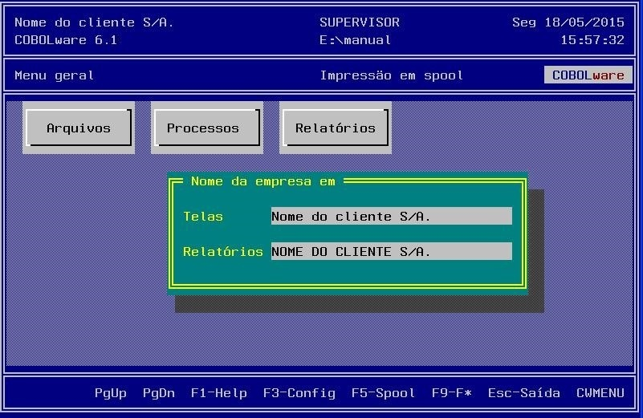

Configura o nome da empresa usuária.
| Modo gráfico |
|  |
| Modo texto |
|  |
Telas
Nome da empresa usuária do sistema aplicativo na forma a ser exibida em telas e no título das janelas.
Relatórios
Nome da empresa usuária do sistema na forma a ser impressa nos relatórios emitidos pelo comando Print Report, ou com o Relator quando usado o formato COBOLware ou se inserida a coluna Relator-EMPRESA.